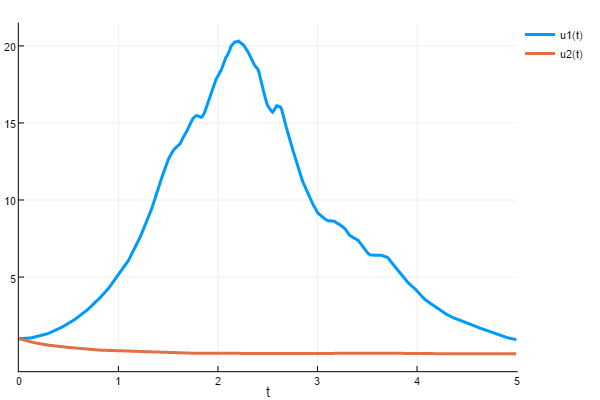

Random Ordinary Differential Equations
This tutorial will introduce you to the functionality for solving RODEs. Other introductions can be found by checking out DiffEqTutorials.jl.
Example 1: Scalar RODEs
In this example we will solve the equation
where $f(u,p,t,W)=2u\sin(W)$ and $W(t)$ is a Wiener process (Gaussian process).
using DifferentialEquations
function f(u,p,t,W)
2u*sin(W)
end
u0 = 1.00
tspan = (0.0,5.0)
prob = RODEProblem(f,u0,tspan)
sol = solve(prob,RandomEM(),dt=1/100)
The random process defaults to a Gaussian/Wiener process, so there is nothing else required here! See the documentation on NoiseProcesses for details on how to define other noise proceses.
Example 2: Systems of RODEs
As with the other problem types, there is an in-place version which is more efficient for systems. The signature is f(du,u,p,t,W). For example,
using DifferentialEquations
function f(du,u,p,t,W)
du[1] = 2u[1]*sin(W[1] - W[2])
du[2] = -2u[2]*cos(W[1] + W[2])
end
u0 = [1.00;1.00]
tspan = (0.0,5.0)
prob = RODEProblem(f,u0,tspan)
sol = solve(prob,RandomEM(),dt=1/100)
By default, the size of the noise process matches the size of u0. However, you can use the rand_prototype keyword to explicitly set the size of the random process:
function f(du,u,p,t,W)
du[1] = -2W[3]*u[1]*sin(W[1] - W[2])
du[2] = -2u[2]*cos(W[1] + W[2])
end
u0 = [1.00;1.00]
tspan = (0.0,5.0)
prob = RODEProblem(f,u0,tspan,rand_prototype=zeros(3))
sol = solve(prob,RandomEM(),dt=1/100)